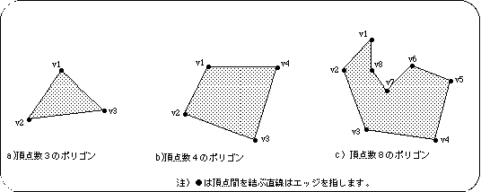
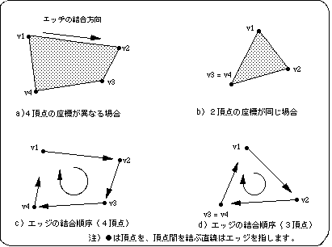
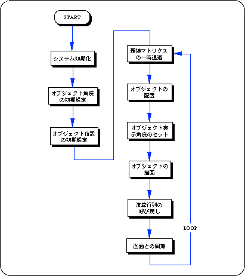
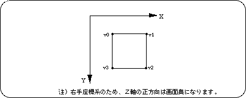
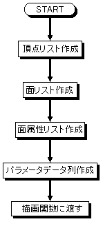
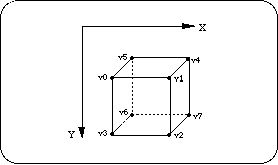

★SGL User's Manual
★PROGRAMMER'S TUTORIAL
★SGL User's Manual
★PROGRAMMER'S TUTORIAL
本章では、３Ｄグラフィックスの基本概念であるポリゴンの考え方と、ＳＧＬにおけるポリゴンの設定法を解説します。
図2-1 一般のポリゴン例

図2-2 セガサターンでのポリゴン例

/*----------------------------------------------------------------------*/
/* Draw 1 Polygon */
/*----------------------------------------------------------------------*/
#include "sgl.h"
extern PDATA PD_PLANE1;
void ss_main(void)
{
static ANGLE ang[XYZ];
static FIXED pos[XYZ];
slInitSystem(TV_320x224, NULL, 1);
ang[X] = ang[Y] = ang[Z] = DEGtoANG(0.0);
pos[X] = toFIXED( 0.0);
pos[Y] = toFIXED( 0.0);
pos[Z] = toFIXED(220.0);
slPrint("Sample program 2.2", slLocate(9,2));
while(-1){
slPushMatrix();
{
slTranslate(pos[X], pos[Y], pos[Z]);
slRotX(ang[X]);
slRotY(ang[Y]);
slRotZ(ang[Z]);
slPutPolygon(&PD_PLANE1);
}
slPopMatrix();
slSynch();
}
}

#include "sgl.h"
POINT point_PLANE1[] = {
POStoFIXED(-10.0, -10.0, 0.0),
POStoFIXED( 10.0, -10.0, 0.0),
POStoFIXED( 10.0, 10.0, 0.0),
POStoFIXED(-10.0, 10.0, 0.0),
};
POLYGON polygon_PLANE1[] = {
NORMAL(0.0, 1.0, 0.0), VERTICES(0, 1, 2, 3),
};
ATTR attribute_PLANE1[] = {
ATTRIBUTE(Dual_Plane, SORT_CEN, No_Texture, C_RGB(31, 31, 31), No_Gouraud, MESHoff, sprPolygon, No_Option),
};
PDATA PD_PLANE1 = {
point_PLANE1, sizeof(point_PLANE1) / sizeof(POINT),
polygon_PLANE1, sizeof(polygon_PLANE1) / sizeof(POLYGON),
attribute_PLANE1
};
図2-3 “polygon.c”による描画モデル

 |
●頂点リストの順に従い上から"0,1,2,3,4,〜n"の順に、頂点識別用の番号が自動的に割り振られます。 | ●ポリゴン面1面ごとに、頂点リストから任意の4点を頂点番号で選択しポリゴン面のリストをつくります。また、光源等を使用する場合は、さらに各面毎に法線ベクトルも設定します。 | ●面リストの順に従い、上から順にポリゴン面の属性を決定します。属性にはポリゴンカラーの他に表面処理の方法などもふくまれます。 | ●頂点リストから頂点数、面リストから面数を算出し新たにリストに書き加えます。これを、ポリゴンパラメータとして描画関数に渡します。 |
【頂点リストの作成：POINT point_＜ラベル名＞[ ]】
変数名：POS2FIXED ( vertex_x , vertex_y , vertex_z ) ,
各頂点座標を表します。座標値はマクロ“POStoFIXED”を使用することで、浮動小数点数値の代入が可能になります（POS2FIXEDは、ＳＧＬがサポートするマクロです）。
頂点リストを元に、ポリゴン面及び法線ベクトルのリストを作成します。
変数名：NORMAL ( vector_x , vector_y , vector_z ) ,
法線ベクトルを各面ごとに定義します。法線ベクトルとはポリゴン面の向きを表すためのもので、ポリゴン面に対して垂直に伸びる単位ベクトルのことをいいます。
パラメータはそれぞれ放線ベクトルの向きを表すＸＹＺ値で、法線ベクトルは常に単位ベクトルで指定する必要があります。
変数名：VERTICES ( v1 , v2 , v3 , v4 ) ,
頂点リスト中のどの頂点を用いてポリゴン面を形成していくかのリストを作成します。選択される頂点数は常に４つです。ただし、３番目と４番目の頂点番号を同じにした場合に限り、見た目三角形のポリゴンが表現できます。
また、頂点番号と、エッジの結合順序には関係がありません。エッジはリストによって選択された第１番目の頂点から、常に時計廻りになるように結合されます。
ポリゴンの表面属性を、面リストの順に従って各面ごとに設定します。
設定内容の詳細については、“第７章：ポリゴンの面属性”の章を参照してください。
ポリゴンの表面属性を設定します。パラメータはそれぞれ、表裏判定、Ｚソート、テクスチャー、カラー、グーロー処理、描画モード、スプライト反転処理、その他機能の計８項目の設定を行います。
（詳細は“第７章：ポリゴンの面属性”の章参照）
ポリゴンデータの各設定をパラメータとして、ライブラリ関数“slPutPolygon”に渡すためのデータストラクチャを作成します。
実際に“slPutPolygon”に渡すデータ列を作成します。
ここでは頂点リストなどの情報から新たに、頂点数とポリゴン面数を算出し、パラメータ・データ列に加えています。
●ポリゴンデータストラクチャ●
PDATA PD_PLANE1={
point_PLANE1, /* 頂点リスト */
sizeof(point_PLANE1)/sizeof(POINT), /* 頂点数 */
polygon_PLANE1, /* 面リスト */
sizeof(polygon_PLANE1)/sizeof(POLYGON), /* 面数 */
attribute_PLANE1 /* 属性リスト */
};
次のリスト2-3は、立方体ポリゴンデータの作成例です。
#include "sgl.h"
POINT point_PLANE1[] = { /* 頂点リストの作成 */
POStoFIXED(-15.0, -15.0, -15.0), /* 頂点座標(XYZ配列) */
POStoFIXED(-15.0, -15.0, 15.0),
POStoFIXED(-15.0, 15.0, -15.0),
POStoFIXED(-15.0, 15.0, 15.0),
POStoFIXED( 15.0, -15.0, -15.0),
POStoFIXED( 15.0, -15.0, 15.0),
POStoFIXED( 15.0, 15.0, -15.0),
POStoFIXED( 15.0, 15.0, 15.0),
};
POLYGON polygon_PLANE1[] = { /* 面リストの作成 */
NORMAL(-1.0, 0.0, 0.0), /* 法線ベクトルの設定 */
VERTICES(0, 1, 3, 2), /* 一面に選択される頂点番号 */
NORMAL( 0.0, 0.0, 1.0),
VERTICES(1, 5, 7, 3),
NORMAL( 1.0, 0.0, 0.0),
VERTICES(5, 4, 6, 7),
NORMAL( 0.0, 0.0, -1.0),
VERTICES(4, 0, 2, 6),
NORMAL( 0.0, -1.0, 0.0),
VERTICES(4, 5, 1, 0),
NORMAL( 0.0, 1.0, 0.0),
VERTICES(2, 3, 7, 6),
};
ATTR attribute_PLANE1[] = { /* 面属性リストの作成 */
ATTRIBUTE(Dual_Plane,SORT_CEN,No_Texture,C_RGB(31,31,00),No_Gouraud,MESHoff,sprPolygon,UseLight),
ATTRIBUTE(Dual_Plane,SORT_CEN,No_Texture,C_RGB(31,00,00),No_Gouraud,MESHoff,sprPolygon,UseLight),
ATTRIBUTE(Dual_Plane,SORT_CEN,No_Texture,C_RGB(00,31,00),No_Gouraud,MESHoff,sprPolygon,UseLight),
ATTRIBUTE(Dual_Plane,SORT_CEN,No_Texture,C_RGB(00,00,31),No_Gouraud,MESHoff,sprPolygon,UseLight),
ATTRIBUTE(Dual_Plane,SORT_CEN,No_Texture,C_RGB(31,00,31),No_Gouraud,MESHoff,sprPolygon,UseLight),
ATTRIBUTE(Dual_Plane,SORT_CEN,No_Texture,C_RGB(00,31,31),No_Gouraud,MESHoff,sprPolygon,UseLight),
};
PDATA PD_PLANE1 = { /* 描画関数用データ列の作成 */
point_PLANE1,
sizeof(point_PLANE1)/sizeof(POINT), /* 頂点数の算出 */
polygon_PLANE1,
sizeof(polygon_PLANE1)/sizeof(POLYGON), /* ポリゴン面数の算出 */
attribute_PLANE1
};
図2-6 リスト2-3のパラメータによる描画モデル

| 関数型 | 関数名 | パラメータ | 機 能 |
|---|---|---|---|
| void | slPutPolygon | PDATA*pat | ポリゴンの描画(パラメータの設定) |
★SGL User's Manual
★PROGRAMMER'S TUTORIAL